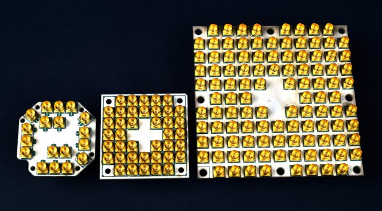

Discover
Intel is one of the most powerful companies which has quantum supremacy nowadays thanks to it’s quantum chips. Intel’s quantum chip uses superconducting qubits and the approach is built on an electrical circuit but it uses a different electronic phenomenon. On 10 October 2017 Intel announced that they discovered a chip which can handle 17 qubits and it was developed in approximately 18 months. For this project which was developed by researchers at a laboratory in Oregon, Intel invested more than $50 milion.

The director of quantum hardware at Intel, Jim Clarke says that the company chose to focus on this topic in 2014 because he figured out that it could accelerate the progress using their existing chips : “Intel is the only player that has advanced manufacturing and packaging technologies”. The Intel researchers adapted the company’s existing 300-nanometer “flip chip” processor design to support the delicacy of quantum processing. This means the processors have to work at super-low temperatures and must be impervious to radio frequency interference. The qubits are stable only in extreme cold, and the researchers modified the materials, the circuit design, and the connections between different components.
BIBLIOGRAPHY
[1] https://spectrum.ieee.org/tech-talk/computing/hardware/intels-49qubit-chip-aims-for-quantum-supremacy
[2] https://www.engadget.com/2018/01/08/intel-s-quantum-computing-efforts-take-a-major-step-forward/